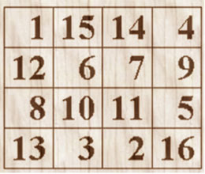

Problem C
The Tajmahal of ++Y2k
Input: standard input
Output: standard output
One of the three members of the World Finals Team of BUET is in deep trouble. But the pity is that he is the starter of his own problem. The team went to Kanpur to qualify for the World Finals. After the contest they went to visit Tajmahal, took many pictures of this great wonder and then returned to Bangladesh. The trouble started afterwards. After coming home the member showed these pictures to many people. Seeing these pictures Someone Special has requested him to build a Tajmahal. This Tajmahal will of course be different than the original one and have some interesting mathematical properties. The properties of this Tajmahal of ++Y2k are as follows:
1) Its floor will be square shaped.
2) The square shaped floor is made of square shaped (of unit length) tiles.
3) If someone enters Tajmahal, he or she is allowed to walk only horizontally or only vertically or only diagonally. That is if he starts walking horizontally he will have to walk the entire Tajmahal in that direction and so on.
4) Everyone is allowed to cover exactly n tiles. (Where n is the length of the sides of Tajmahal)
5) Every tile will have a unique number on it. While a man is walking through Tajmahal in an allowed path, the sum of all tiles he crosses will be same as any other man crossing that Tajmahal in an allowed Path. This sum will be given as input
6) The different numbers will have values in range of (n*n-1)
Though he is a very good programmer he cannot be confident about his solution. So he is asking for your help.
If such a Tajmahal is not possible you will have to print the line “You can’t be like Shahjahan!”. Otherwise print the description of Tajmahal.
|
 |
|
If someone is interested to know more about Tajmahal (though not required for this problem) he or she can visit the following link:
http://rubens.anu.edu.au/student.projects/tajmahal/hist_sign.html
Input
Input will contain several lines of input. Each line will contain two
integers L (0<L<=100) which is the length or width of Tajmahal and S(S<200000000) which is the sum of the numbers of any valid
walking path.
Output
As output you will have to print a valid layout of such a Tajmahal which will of course be a square full of numbers. If such a Tajmahal is not possible print the line “You can't be like Shahjahan!” as shown in the sample output. A blank line should follow each set of output. The numbers in the output should be printed right justified in field of width 10. There can be multiple solutions. Any good solution will be accepted.
Sample Input
4 34Sample Output
1 15 14 4